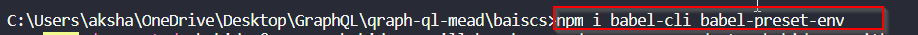

1. npm i babel-cli babel-preset-env

babel-cli -> to pass our code through babel and actually compile it
babel-preset-env --> tell babel what it should change
2. create a new file.babel.rc

3. Create an app entry point, like app.js and place the nodemon src/app.js --exec babel-node in npm start script